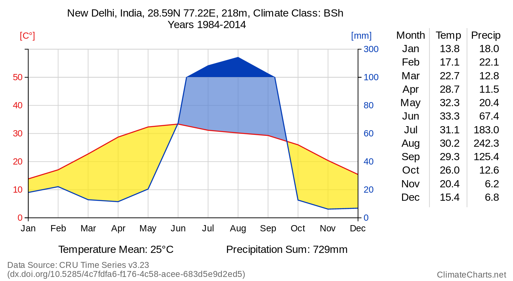

The ClimateChart application shows the climate, i.e. the temperature and the precipitation, of all places on Earth. When you click on the world map above, a climate chart and a diagram showing the variation of temperature and precipitation of this location on Earth are plotted. On the right side you can change the source of the climate data and change the time frame of the data.
ClimateCharts.net
An application to create meteorological charts for places worldwide
Datasets
ClimateCharts.net uses two different kinds of data sources: interpolated and simulated climate data for raster cells on the map and real measured weather data from weather stations around the world.
Climate Data for Raster Cells
CRU Time Series v3.23
University of East Anglia Climatic Research Unit; Harris, I.(.; Jones, P.D. (2015):
CRU TS3.23: Climatic Research Unit (CRU) Time-Series (TS) Version 3.23 of
High Resolution Gridded Data of Month-by-month Variation in Climate (Jan. 1901- Dec. 2014).
Centre for Environmental Data Analysis, 09 November 2015.
Spatial Resolution: 0.5° x 0.5°
Temporal Coverage: 1901 - 2014
University of Delaware Air Temperature and Precipitation v4.01
Monthly global gridded high resolution station (land) data for air temperature
and precipitation from 1901-2014. UDel_AirT_Precip data provided by the NOAA/OAR/ESRL PSD,
Boulder, Colorado, USA, from their Web site at http://www.esrl.noaa.gov/psd/ Reference:
Willmott, C. J. and K. Matsuura (2001) Terrestrial Air Temperature and Precipitation:
Monthly and Annual Time Series (1950 - 1999)
Spatial Resolution: 0.5° x 0.5°
Temporal Coverage: 1901 - 2014
GHCN CAMS
and
GPCC v7
GHCN CAMS is a high resolution (0.5x0.5) analyzed global land surface temperatures
from 1948 to near present. GHCN Gridded V2 data provided by the NOAA/OAR/ESRL PSD,
Boulder, Colorado, USA, from their Web site at http://www.esrl.noaa.gov/psd/ Reference:
Fan, Y., and H. van den Dool (2008), A global monthly land surface air temperature analysis
for 1948-present, J. Geophys. Res., 113, D01103. GPCC Global Precipitation Climatology Centre
monthly precipitation dataset from 1901-present is calculated from global station data.
Reference: Schneider, Udo; Becker, Andreas; Finger, Peter; Meyer-Christoffer, Anja; Rudolf, Bruno;
Ziese, Markus (2011): GPCC Full Data Reanalysis Version 6.0 at 0.5°: Monthly Land-Surface Precipitation
from Rain-Gauges built on GTS-based and Historic Data.
Spatial Resolution: 0.5° x 0.5°
Temporal Coverage: 1948 - 2013
Please note that the temperature and precipitation values shown in the diagram are based on interpolated data and therefore might differ significantly from real conditions.
Weather Stations
Global Historical Climatology Network
GHCN-Monthly provides climatological observations for four elements: monthly mean maximum
temperature, minimum temperature, mean temperature, and monthly total precipitation.
Since the early 1990s the Global Historical Climatology Network-Monthly (GHCN-M) dataset
has been an internationally recognized source of data for the study of observed variability
and change in land surface air temperature. It provides monthly mean temperature data for
7280 stations from 226 countries and territories, ongoing monthly updates of more than 2000 stations
to support monitoring of current and evolving climate conditions, and homogeneity adjustments
to remove non-climatic influences that can bias the observed temperature record.
Location Names and Elevation data
For the title and elevation value the gazetteer from GeoNames is used (Creative Commons Attribution 3.0 License). Elevation is based on SRTM data and only available between 60° northern and 58° southern latitude. The climate class is calculated from the temperature and precipitation data according to the Köppen-Geiger climate classification scheme.
Active Dataset
Software
Frontend libraries:
- Bootstrap
- Data Driven Documents (D3) + Box Plots
- Save SVG As PNG
- jQuery + jQuery UI
- Leaflet
- CSS Toggle Switch
- x2js
Servers and web services:
Optimized for Firefox and Chrome. This website uses the Piwik Analytics Platform to obtain user data.
License

All generated diagrams by climatecharts.net are licensed under a Creative Commons Attribution 4.0 International License.
The Walter-Lieth Chart
The charts on this site are drawn following the Walter-Lieth standard. The most characteristic feature of this type of climate diagram is that the ratio between temperature and precipitation scale is constantly 1:2, which makes it easier to compare local climates. If there are precipitation values above 100mm per month, the scale above is aligned, ensuring that the chart doesn't become to missshaped. Additionally, it graphically emphasizes in a simplified form if the local conditions are humid, perhumid, arid or seasonally changing.
All generated diagrams by climatecharts.net are licensed under a Creative Commons Attribution 4.0 International License.
The
Legal disclaimer of Dresden University of Technology is applied
with the following constraint:
Web design and technical development:
M.Sc. Marcus Kossatz
M.Sc. Felix Wiemann
Peggy Thiemt
Contact:
Prof. Dr. Lars Bernard
Mail: Lars.Bernard@tu-dresden.de
Phone: +49 (0)351 463-35880
Matomo Webanalysis
To improve our web pages, we additionally collect anonymised visitor data using the web analysis tool Matomo (formerly PIWIK).
In order for us to provide you the best possible experience on our website, we need to collect and process certain information. Depending on your use of the Services, that may include:
- Usage data — when you visit our site, we will store: the website from which you visited us from, the parts of our site you visit, the date and duration of your visit, your anonymised IP address, information from the device (device type, operating system, screen resolution, language, country you are located in, and web browser type) you used during your visit. We process this usage data for statistical purposes, to improve our site and to recognize and stop any misuse.
- Cookies — we use cookies (small data files transferred onto computers or devices by sites) for record-keeping purposes and to enhance functionality on our site. You may deactivate or restrict the transmission of cookies by changing the settings of your web browser. Cookies that are already stored may be deleted at any time.
You can opt out of being tracked by our Matomo Analytics instance below: